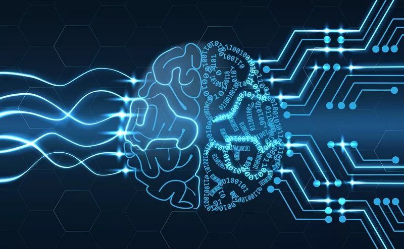

Нейронная сеть и возможность ее обучения
Принцип работы нейронной сети (НС) и ее структура взяты из
нейробиологии. Сама идея заключалась в том, чтобы получить
математическую модель и ее программное воплощение, которые бы
имитировали деятельность человеческого мозга. Разработками в этой
области ученые занимаются уже с середины прошлого века. Однако лишь в
последние годы развитие нейросетей смогло достичь впечатляющих
результатов.
Почему работа в этом направлении так важна? Дело в том, что ни одна
вычислительная система не в состоянии воплотить аналитические
способности человеческого мозга. Между тем, именно эти качества
необходимы программам для решения ряда сложных задач.

В настоящее время нейронные сети используют в следующих направлениях:
Классификационный анализ — разделение вводных данных по
каким-либо признакам. Например, в медицине нейросеть облегчает задачи по
диагностике: возраст пациента и его пол, жалобы на здоровье, результаты
анализа, записи из анамнеза, реакция на препараты и т.д. – все это
позволяет распределить больных по степени тяжести состояния.
Прогнозирование — с учетом показателей можно
спрогнозировать последующие события. Например, каршеринг использует
нейросети для выявления агрессивных водителей, чтобы в дальнейшем
ограничить им доступ к авто.
Распознавание образов— это наиболее популярная область для
использования нейросетей: идентификация символов на бумаге и банковских
картах; распознавание лиц для решения вопросов государственной
безопасности; поиск по картинке в Google и прочее.
В основе функционирования искусственного интеллекта лежит машинное
обучение. Оно позволяет совершенствовать производительность ИИ без
перепрограммирования системы. Говоря простым языком, этот процесс похож
на обучение ребенка – он учится классифицировать и распознавать объекты,
определять взаимосвязь между ними, и день за днем у него это получается
все лучше.
Машинное обучение неразрывно связано с НС и представляет собой работу,
при которой смоделированная среда имитирует процессы наработки опыта
человеком, постепенно повышая точность результатов.